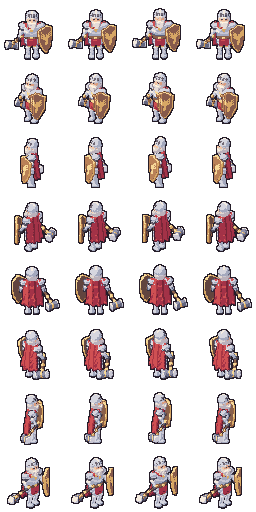
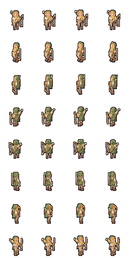
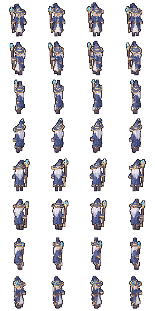
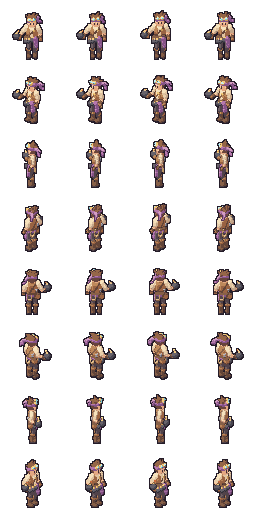

SpriteStack
Character Lab
冒険者の一行
8方向の待機・歩行・攻撃
読み込み中…
モーション
待機
歩行
攻撃
向き
表示倍率
1× 原寸
2×
3×
一時停止
歩幅に合わせて床面を移動
攻撃を1回再生
攻撃を繰り返す
攻撃コマ
キャラクター
4人を並べる

GARD
ガルド
老練な重戦士
待機 GIF
歩行 GIF
攻撃 GIF

RICO
リコ
少年の斥候
待機 GIF
歩行 GIF
攻撃 GIF

SENA
セナ
氷の術師
待機 GIF
歩行 GIF
攻撃 GIF

TOBI
トビ
発破師
待機 GIF
歩行 GIF
攻撃 GIF
アニメーション操作には JavaScript を有効にしてください。各キャラクターのGIFも再生できます。